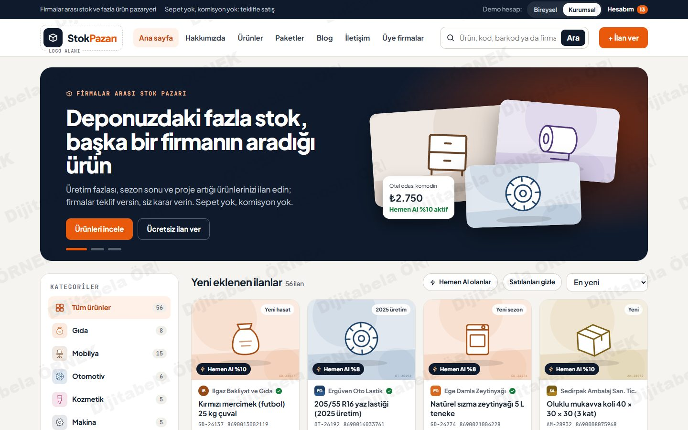
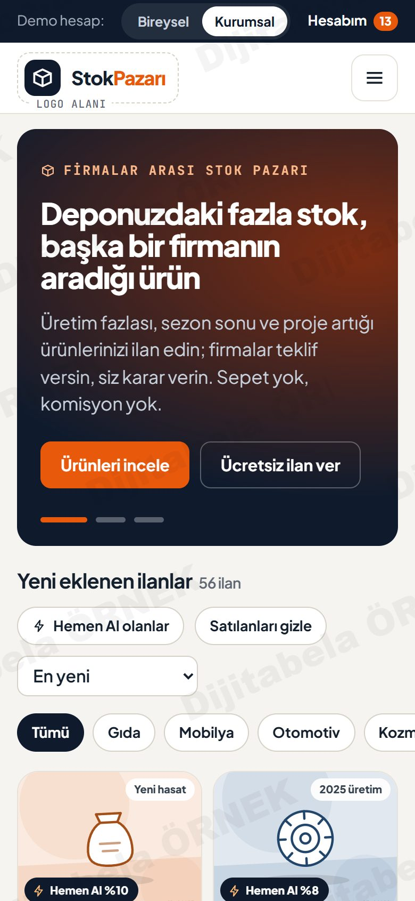
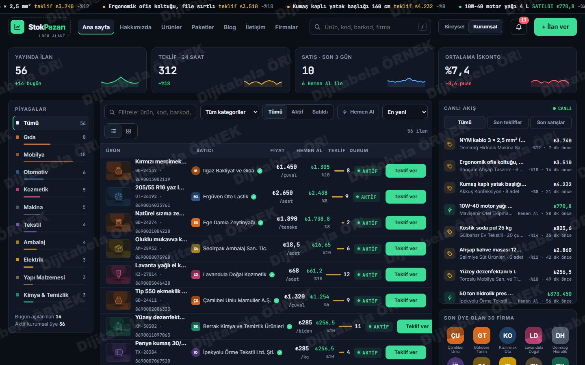
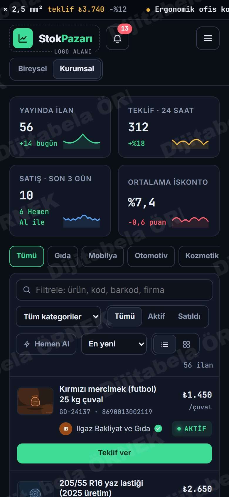
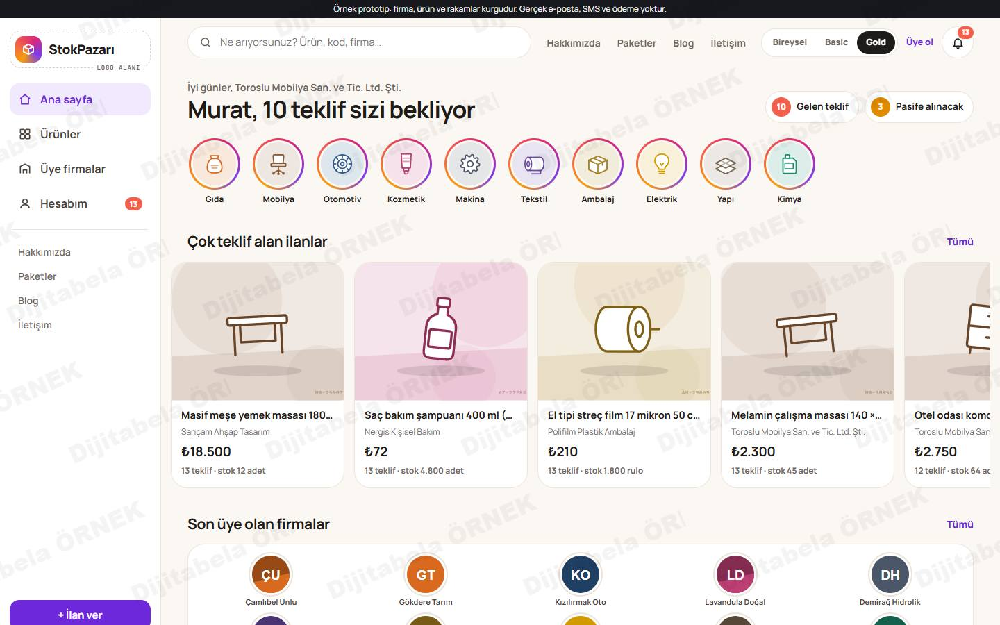
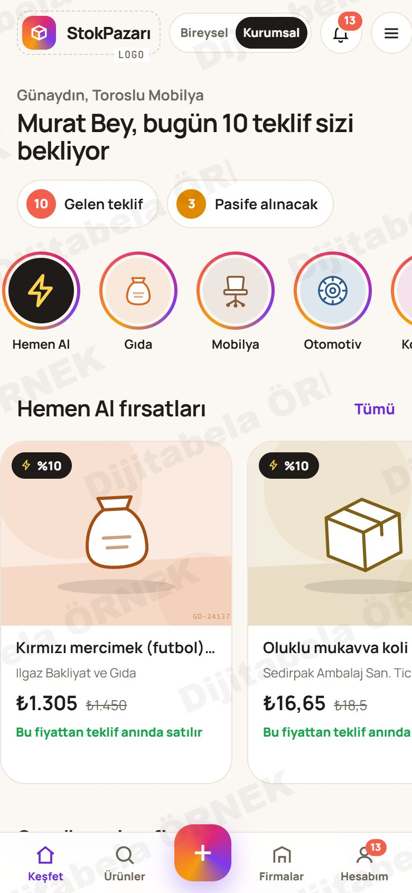

Teklifle satılan stok pazarı: 3 ayrı yerleşim, hepsi çalışıyor
E-ticaret değil, firmalar arası teklif platformu: sepet yok, ödeme yok. Alıcı ürünün tamamını satın alır ya da istediği miktar için teklif verir; satıcının arka planda belirlediği sınırdaki teklif kendiliğinden satışa döner.
Gönderdiğiniz Excel ve “site düzeltmeler” dosyasındaki kuralları üç farklı tasarımda kurduk. Platformun adı henüz belli olmadığı için geçici olarak “StokPazarı” yazdık; logo alanları işaretli. Firma ve ürünler örnek veridir, fiyatlar yer tutucudur.
Tasarımı seçin


Excel'deki düzene birebir sadık klasik pazaryeri: solda logo ve kategoriler, üstte menü, slayt banner, ortada ürün kartları, kategorilerin altında son üye olan 30 firma (5'li, 6 sıra).
Vitrin yerleşimi: tam ekran fotoğrafCanlı aç →

Koyu, veri yoğun ekran: kayan teklif şeridi, filtre çubuklu tablo, sağda “son teklifler / son satışlar” akışı (örnek veri), ürün sayfasında teklif geçmişi grafiği, satın al ve teklif kutusu.
Dergi yerleşimi: çerçeveli fotoğraf, numaralı bölümlerCanlı aç →

Telefonda uygulama gibi: hikâye halkalarıyla kategoriler (dokununca ilanlar hikâye gibi akar), kart akışı, alt sabit menü, ortada “İlan ver” düğmesi, alttan açılan teklif penceresi.
Uygulama yerleşimi: kartlar, açılır paneller, alt menüCanlı aç →Üç tasarımda da çalışan özellikler
Ürün sayfasında ve listelerde Satın al düğmesi: stoğun tamamı ilan fiyatından alınır. Farklı miktar ya da fiyat için teklif verilir. En az alım miktarı kaldırıldı.
Ön yüzde hiçbir yerde görünmez. Satıcı ilan girerken ilan fiyatından yüzde kaç düşük ve yüzde kaç yüksek teklifin otomatik satılacağını yazar. 140 TL'lik ürüne 135 TL ya da 10 çuval için 150 TL teklif, sınır içindeyse anında satılır. Sınırın altındaki ve üstündeki teklifler satıcının onayına düşer.
Bireysel, Basic ya da Gold seçilir; bilgilendirme metni onaylanmadan üyelik tamamlanmaz. Telefon ve e-posta doğrulanmadan ilan verilemez (prototipte örnek kod).
Ücretsiz, yılda 3 ilan, teklif verme ve alma, hemen al ayarı ve alım talebi açık. İlan 30 gün yayında, 2 kez yenilenir, en fazla 90 gün. Üye sayfasının bannerı site reklamı içindir, kategoriye özeldir; resim yüklenemez.
Basic: aynı anda 10 ilan yayında, logo, üst banner, 1 tanıtım resmi. Gold: aynı anda 25 ilan yayında, logo, üst banner, kayan slayt 5 tanıtım resmi. İlan kaldırılınca hak geri açılır. Resimler panelden yüklenir.
Kurumsal ilan 30 günde pasife düşer, güncellenip yayına alınır, en fazla 1 yıl. Satılan ilan tekrar yayına alınamaz, yeni ilan gerekir. Panelde süreyi ileri alıp deneyebilirsiniz.
Satılan ürün listede kalır; SATILDI bandı ve “Alım talebi gönder” penceresi. Parça satışta stok düşer, ilan yayında kalır. 3 gün içinde pasife alınmayan satılmış ilan kalkar.
Gelen teklifler (kabul, ret, mesaj), satılanlar, ilanlarım, alım talepleri, tekliflerim, mesajlar, faaliyet alanı, firma sayfam, kategori duyurusu.
- Üstten “Üye ol”a girin; bilgilendirme metnini onaylamadan üyeliğin tamamlanmadığını görün.
- “Mısır kırığı 25 kg çuval” ilanına (140 TL) girin: 135 TL teklif verin, anında satılır. 120 TL verin, satıcı onayına gider.
- Gold hesapta Hesabım → İlanlarım: hemen al yüzdelerini değiştirin; ön yüzde bu bilginin görünmediğini kontrol edin.
- Bireysel hesaba geçin: teklif verin, Hesabım → İlanlarım'da “30 gün ileri al” ile yenileme hakkını deneyin; üye sayfasındaki reklam bannerına bakın.
Örnek veri yalnız sizin tarayıcınızda tutulur; gerçek e-posta, SMS ve ödeme yoktur. Hesabım sayfasının altındaki “Demoyu sıfırla” ile başa dönersiniz.